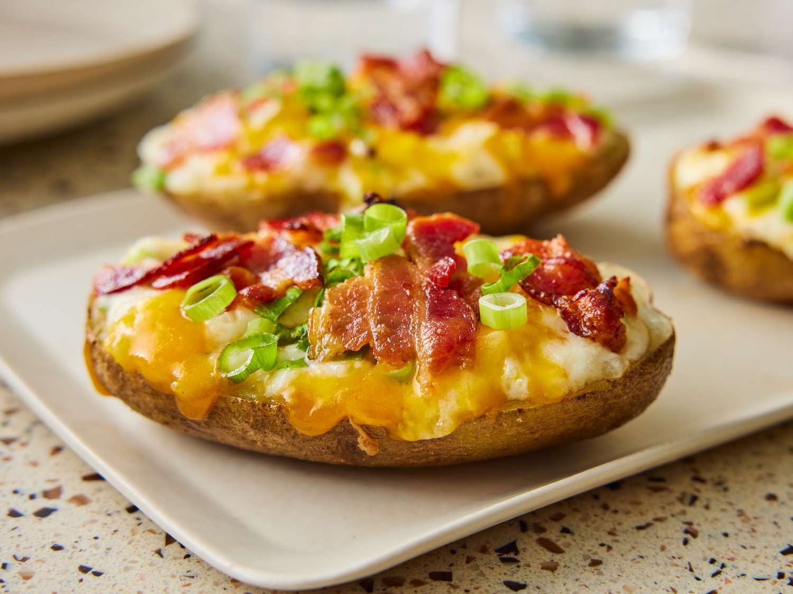

Tomato and eggs is a hot dish which originated from China. It is a simple and fast dish to make, but it has good nutritional value. It is a very satisfying food to eat and popularly served with rice and topped with green onions.
Double Chocolate Cookies
Origin: Michigan
Source: Family Recipe
Category: Dessert

My daughter learned to make these cookies at a baking camp at Zingermanns and has tweaked the recipe to fit the taste buds of her siblings. They are extremely sugary so the salt helps to balance it. Note, these cookies are best eaten very quickly.
Recipe Ingredients
- Unsalted butter
- Granulated Sugar
- Packed light or dark brown sugar
- Large egg
- Pure vanilla extract
- Semi-sweet chocolate chunks (melted)
- All-purpose flour
- Natural unsweetened cocoa powder
- Baking soda
- Salt
- Semi-sweet chocolate chunks
Recipe Steps
- In a mixing bowl cream together the butter, granulated sugar, and brown sugar
- Add the egg and vanilla extract and beat well
- Add the melted chocolate
- In a separate bowl combine the flour, baking soda, cocoa powder and salt
- Combine the wet and dry ingredients
- Add the unmelted chocolate chunks.
- Form 15 cookies and place on a baking sheet.
- Cook for 12 to 13 minutes at 350 degrees.
Additional Food images


Tomato and Eggs
Origin: China
Source: Own recipe
Category: Main dish

Recipe Ingredients
- Tomatoes
- Eggs
- Salt
- Sugar
- Cooking oil
Recipe Steps
- Crack eggs into a bowl and mix until scrambled.
- Cut tomatoes into pieces around the size of your thumb.
- Oil a hot pan and cook the eggs until satisfied then remove the eggs.
- Re-oil the pan and cook the tomatoes until they loosen.
- Combine eggs and tomatoes and season with salt and sugar.


Twice Baked Potato
Origin: South America
Source: All Recipes Website
Category: Comfort Dish

These twice-baked potatoes work perfectly as a simple, crowd-pleasing entrée or as a rich side dish. It is believed that baked potatoes originate from South America, or more specifically, Peru. The Inca Indians in Peru were said to be the first to originally cultivate potatoes and when the Spanish conquistadors conquered Peru, they brought the potato to Europe.
Recipe Ingredients
- 4 large baking potatoes
- 8 slices bacon
- 1 cup sour cream
- ½ cup milk
- 4 tablespoons butter
- ½ teaspoon salt
- ½ teaspoon pepper
- 1 cup shredded Cheddar cheese, divided
- 8 green onions, sliced, divided
Recipe Steps
- Gather ingredients and preheat the oven to 350 degrees F (175 degrees C).
- Bake potatoes in the preheated oven until tender, about 1 hour, depending on the size of your potatoes. Set potatoes aside until cool enough to handle.
- Meanwhile, place bacon in a large, deep skillet. Cook over medium-high heat until evenly brown. Drain, crumble, and set aside.
- Slice potatoes in half lengthwise and scoop the flesh into a large bowl; save skins.
- Add sour cream, milk, butter, salt, pepper, 1/2 cup cheese, and 1/2 of the green onions to the potato; mix with a hand mixer until well blended and creamy.
- Spoon the mixture into the potato skins; top each with remaining cheese, green onions, and bacon.
- Return potatoes to the preheated oven and continue baking until the cheese is melted, about 15 minutes. Serve Hot!


These twice-baked potatoes work perfectly as a simple, crowd-pleasing entrée or as a rich side dish. It is believed that baked potatoes originate from South America, or more specifically, Peru. The Inca Indians in Peru were said to be the first to originally cultivate potatoes and when the Spanish conquistadors conquered Peru, they brought the potato to Europe.